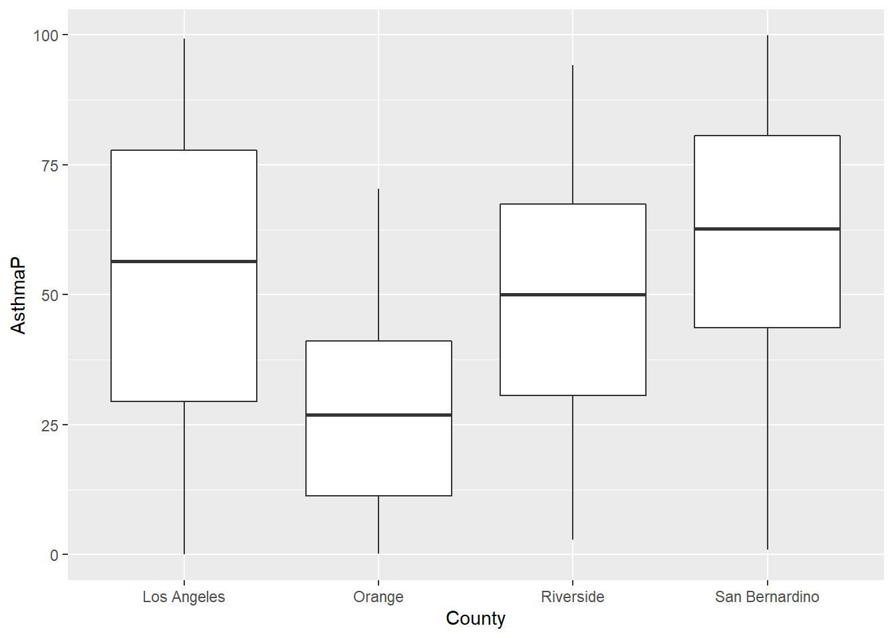
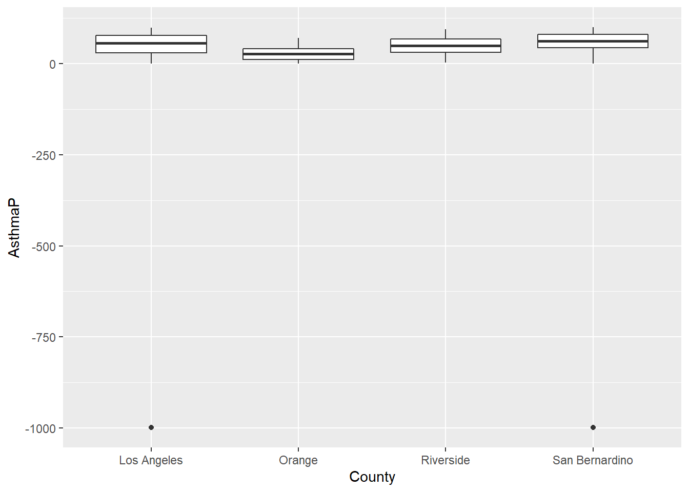

21 Data Science 101
Today we focus on the practice of manipulating data in R
21.1 Introduction
‘Tidy datasets are all alike, but every messy dataset is messy in its own way.’
— Hadley Wickham

Mr. Wickham is of course quoting Tolstoy, but his observation is poignant and correct. Much of the work in data visualization is finagling one’s dataset.
Today, we will focus on some key functions to tidy messy data, as compiled by me. Examples will be provided using data from previous lectures.
Let’s get started with initializing today’s R script to include the libraries we’ll be using. Start with tidyverse and sf.
Next, install and load janitor.
install.packages('janitor')
21.1.1 st_transform()
st_transform() transforms or converts coordinates of simple feature geospatial data. Spatial projections are fraught with peril in geospatial visualizations. Our first function is one that has been used a bunch of times - st_transform(). Leaflet needs its data transformed into WGS84 and st_transform() is the function that makes the coordinate reference system go the right place.
URL.path <- 'https://raw.githubusercontent.com/RadicalResearchLLC/EDVcourse/main/CalEJ4/CalEJ.geoJSON'
SoCalEJ <- st_read(URL.path) %>%
st_transform("+proj=longlat +ellps=WGS84 +datum=WGS84")Reading layer `CalEJ' from data source
`https://raw.githubusercontent.com/RadicalResearchLLC/EDVcourse/main/CalEJ4/CalEJ.geoJSON'
using driver `GeoJSON'
Simple feature collection with 3747 features and 66 fields
Geometry type: MULTIPOLYGON
Dimension: XY
Bounding box: xmin: 97418.38 ymin: -577885.1 xmax: 539719.6 ymax: -236300
Projected CRS: NAD83 / California AlbersWH.url <- 'https://raw.githubusercontent.com/RadicalResearchLLC/WarehouseMap/main/WarehouseCITY/geoJSON/warehouse.geoJSON'
warehouses <- st_read(WH.url) %>%
st_transform("+proj=longlat +ellps=WGS84 +datum=WGS84")Reading layer `warehouse' from data source
`https://raw.githubusercontent.com/RadicalResearchLLC/WarehouseMap/main/WarehouseCITY/geoJSON/warehouse.geoJSON'
using driver `GeoJSON'
Simple feature collection with 10261 features and 11 fields
Geometry type: POLYGON
Dimension: XY
Bounding box: xmin: -118.8037 ymin: 33.43325 xmax: -114.4085 ymax: 35.55527
Geodetic CRS: WGS 84
21.1.2 janitor::clean_names()
The first step in being able to deal with a dataset is to have the names of the variables comport with standard R naming format. clean_names() gets rid of those spaces and standardizes the capitalization of letters for column names.
If your dataset column names have spaces or strange characters (parentheses, $, or /), the best way to deal with that is to instantly run clean_names(). R functions do not like special characters in variable names.
In Chapter 18 we used janitor::clean_names() to fix the import of the ecological footprint excel spreadsheet. Here’s the example again.
filename <- 'NFA 2022 Public Data Package 1.1.xlsx'
country_results <- read_excel(filename, sheet = 'Country Results 2022 Ed (2018)', skip = 21) New names:
• `Cropland Footprint` -> `Cropland Footprint...10`
• `Grazing Footprint` -> `Grazing Footprint...11`
• `Forest Product Footprint` -> `Forest Product Footprint...12`
• `Fish Footprint` -> `Fish Footprint...13`
• `Built up land` -> `Built up land...14`
• `Carbon Footprint` -> `Carbon Footprint...15`
• `Cropland Footprint` -> `Cropland Footprint...17`
• `Grazing Footprint` -> `Grazing Footprint...18`
• `Forest Product Footprint` -> `Forest Product Footprint...19`
• `Fish Footprint` -> `Fish Footprint...20`
• `Built up land` -> `Built up land...21`
• `Carbon Footprint` -> `Carbon Footprint...22`
• `Built up land` -> `Built up land...28`names(country_results) [1] "Country"
[2] "Data Quality"
[3] "SDGi"
[4] "Life Expectancy"
[5] "HDI"
[6] "Per Capita GDP"
[7] "Region"
[8] "Income Group"
[9] "Population (millions)"
[10] "Cropland Footprint...10"
[11] "Grazing Footprint...11"
[12] "Forest Product Footprint...12"
[13] "Fish Footprint...13"
[14] "Built up land...14"
[15] "Carbon Footprint...15"
[16] "Total Ecological Footprint (Production)"
[17] "Cropland Footprint...17"
[18] "Grazing Footprint...18"
[19] "Forest Product Footprint...19"
[20] "Fish Footprint...20"
[21] "Built up land...21"
[22] "Carbon Footprint...22"
[23] "Total Ecological Footprint (Consumption)"
[24] "Cropland"
[25] "Grazing land"
[26] "Forest land"
[27] "Fishing ground"
[28] "Built up land...28"
[29] "Total biocapacity"
[30] "Ecological (Deficit) or Reserve"
[31] "Number of Earths required"
[32] "Number of Countries required"
[33] "actual \r\nCountry Overshoot Day \r\n2018"country_results2 <- clean_names(country_results)
names(country_results2) [1] "country"
[2] "data_quality"
[3] "sd_gi"
[4] "life_expectancy"
[5] "hdi"
[6] "per_capita_gdp"
[7] "region"
[8] "income_group"
[9] "population_millions"
[10] "cropland_footprint_10"
[11] "grazing_footprint_11"
[12] "forest_product_footprint_12"
[13] "fish_footprint_13"
[14] "built_up_land_14"
[15] "carbon_footprint_15"
[16] "total_ecological_footprint_production"
[17] "cropland_footprint_17"
[18] "grazing_footprint_18"
[19] "forest_product_footprint_19"
[20] "fish_footprint_20"
[21] "built_up_land_21"
[22] "carbon_footprint_22"
[23] "total_ecological_footprint_consumption"
[24] "cropland"
[25] "grazing_land"
[26] "forest_land"
[27] "fishing_ground"
[28] "built_up_land_28"
[29] "total_biocapacity"
[30] "ecological_deficit_or_reserve"
[31] "number_of_earths_required"
[32] "number_of_countries_required"
[33] "actual_country_overshoot_day_2018" The names are now all lower case, and there are no spaces or ... or parentheses. There are extra arguments to provide different naming conventions for capitalization (snake, lower_camel, upper_lower, etc.)
Here’s an example for lower_camel case. Underscores are gone. New words are capitalized, but first letter of first word is not.
country_results3 <- clean_names(country_results2, case = 'lower_camel')
names(country_results3) [1] "country" "dataQuality"
[3] "sdGi" "lifeExpectancy"
[5] "hdi" "perCapitaGdp"
[7] "region" "incomeGroup"
[9] "populationMillions" "croplandFootprint10"
[11] "grazingFootprint11" "forestProductFootprint12"
[13] "fishFootprint13" "builtUpLand14"
[15] "carbonFootprint15" "totalEcologicalFootprintProduction"
[17] "croplandFootprint17" "grazingFootprint18"
[19] "forestProductFootprint19" "fishFootprint20"
[21] "builtUpLand21" "carbonFootprint22"
[23] "totalEcologicalFootprintConsumption" "cropland"
[25] "grazingLand" "forestLand"
[27] "fishingGround" "builtUpLand28"
[29] "totalBiocapacity" "ecologicalDeficitOrReserve"
[31] "numberOfEarthsRequired" "numberOfCountriesRequired"
[33] "actualCountryOvershootDay2018"
21.1.3 filter()
filter() is used to subset a data table, retaining any rows that meet the conditions of the filter.
-
filter()is used on numbers by applying operators (e.g., >, =, <, >=, <=).
-
filter()can be applied on character strings by using the identity operator==.
-
filter()can be applied to multiple character strings by using the %in% operator on lists.
In the first example, filter()was applied to remove the values that were set at -999; we only believed values from 0-100 were reasonable. Figure 21.1 uses filter() to remove those values. I’ve also shown an example without the filter applied in Figure 21.2 . Not removing those rows messes up our visualization.

SoCalEJ %>%
#filter()
ggplot(aes(x = County, y = AsthmaP)) +
geom_boxplot()
In Chapter 9 we also applied filter in two successive data transformations that are good examples of data munging. After creating a narrow data set, we apply filter(value >=0) to remove all negative values. Then we applied filter(variable %in% c('OzoneP', 'DieselPM_P', 'PolBurdP')) to select three specific variable choices out of the 55 we had available. If we exclude that second filter, the plot becomes crazy busy.
# select socioeconomic indicators and make them narrow - only include counties above 70%
SoCal_narrow <- SoCalEJ %>%
st_set_geometry(value = NULL) %>%
pivot_longer(cols = c(5:66), names_to = 'variable', values_to = 'value') %>%
filter(value >=0)
SoCal_narrow %>%
filter(variable %in% c('OzoneP', 'DieselPM_P', 'PolBurdP')) %>%
ggplot(aes(x = County, y = value, fill= variable)) +
geom_boxplot()
SoCal_narrow %>%
#filter(variable %in% c('OzoneP', 'DieselPM_P', 'PolBurdP')) %>%
ggplot(aes(x = County, y = value, fill= variable)) +
geom_boxplot()
21.1.4 select()
select() variables (i.e., columns) in a data table for retention.
-
select()can be applied to subsets column number or name. -
select()also has some pattern matching helpers.
Chapter 20 included an example of using select() on the Toxics Release Inventory dataset. It also demonstrate using clean_names() and filter() as part of the import process. The raw dataset is MESSY!
## This is a test import of the first 25 rows of an 18,000 row dataset
TRI_2021_raw <- read_csv('2021_us.csv', n_max = 25) #%>%
head(TRI_2021_raw)# A tibble: 6 × 119
`1. YEAR` `2. TRIFD` 3. FR…¹ 4. FA…² 5. ST…³ 6. CI…⁴ 7. CO…⁵ `8. ST` 9. ZI…⁶
<dbl> <chr> <dbl> <chr> <chr> <chr> <chr> <chr> <chr>
1 2021 65301SRRBL1… 1.10e11 SIERRA… 1400 W… SEDALIA PETTIS MO 65301
2 2021 46506MLLRB2… 1.10e11 RBC PR… 225 IN… BREMEN MARSHA… IN 46506
3 2021 3211WBRDDC4… 1.10e11 BRADDO… 400 FE… DAYTON… VOLUSIA FL 32114
4 2021 76712CCCLF8… 1.10e11 COCA-C… 8400 I… WACO MCLENN… TX 76712
5 2021 3355WMTTLR1… 1.10e11 METTLE… 1571 N… LUTZ HILLSB… FL 33558
6 2021 3355WMTTLR1… 1.10e11 METTLE… 1571 N… LUTZ HILLSB… FL 33558
# … with 110 more variables: `10. BIA` <lgl>, `11. TRIBE` <lgl>,
# `12. LATITUDE` <dbl>, `13. LONGITUDE` <dbl>, `14. HORIZONTAL DATUM` <chr>,
# `15. PARENT CO NAME` <chr>, `16. PARENT CO DB NUM` <chr>,
# `17. STANDARD PARENT CO NAME` <chr>, `18. FEDERAL FACILITY` <chr>,
# `19. INDUSTRY SECTOR CODE` <dbl>, `20. INDUSTRY SECTOR` <chr>,
# `21. PRIMARY SIC` <lgl>, `22. SIC 2` <lgl>, `23. SIC 3` <lgl>,
# `24. SIC 4` <lgl>, `25. SIC 5` <lgl>, `26. SIC 6` <lgl>, …## This dataset is MESSY! Time to munge!
TRI_2021 <- read_csv('2021_us.csv') %>%
# make variable names better
janitor::clean_names() %>%
# keep only Ethylene oxide facilities
filter(x34_chemical == 'Ethylene oxide') %>%
# keep only the name, city, lat/lng, and emissions total columns
select(x4_facility_name, x6_city, x12_latitude, x13_longitude, x62_on_site_release_total) %>%
rename(facility = x4_facility_name,
city = x6_city,
lat = x12_latitude,
lng = x13_longitude,
emissions = x62_on_site_release_total)
head(TRI_2021)# A tibble: 6 × 5
facility city lat lng emissions
<chr> <chr> <dbl> <dbl> <dbl>
1 EVONIK CORP RESERVE 30 -91 1985
2 EQUISTAR CHEMICALS BAYPORT CHEMICALS PLANT PASADENA 30 -95 10623
3 MIDWEST STERILIZATION CORP JACKSON 37 -90 407
4 UNION CARBIDE CORP SEADRIFT PLANT SEADRIFT 29 -97 4612
5 BECTON DICKINSON & CO MADISON OPERATIONS MADISON 34 -83 1049
6 TM DEER PARK SERVICES LP DEER PARK 30 -95 10160library(leaflet)
library(htmltools)
leaflet() %>%
addTiles() %>%
addProviderTiles(provider = providers$Esri.WorldImagery,
group = 'Imagery') %>%
addLayersControl(baseGroups = c('Basemap', 'Imagery'), overlayGroups = 'TRI EtO Facilities',
options = layersControlOptions(collapsed = FALSE)) %>%
addCircles(data = TRI_2021, color = 'red', opacity = 0.3) %>%
addCircles(data = TRI_2021, weight = 1, stroke = FALSE,
color = 'red',
radius = ~emissions * 10, popup = ~facility,
opacity = 0.5,
group = 'TRI EtO Facilities')
21.1.5 mutate()
mutate() adds new variables and preserves existing ones. mutate() can be used to overwrite existing variables - careful with name choices.
This is a great function for synthesizing information, transformations, and combining variables.
- changing units - use
mutate() - creating a rate or normalizing data - use
mutate() - need a new variable or category - use
mutate()
I used mutate() to create a decimal date function for our CH4 visualizations in Chapter 12. I used mutate() to correct the spelling of San Bernardino in Chapter 8, in combination with the ifelse() function. I used mutate() in Chapter 20 to calculate volumes of rain by multiplying precipitation values (inches) by area (m2) of counties.
Let’s use mutate() to convert the TRI ethylene oxide emissions from pounds to kilograms to avoid imperialism.
1 pound = 0.453592 kilograms
# A tibble: 6 × 6
facility city lat lng emiss…¹ emiss…²
<chr> <chr> <dbl> <dbl> <dbl> <dbl>
1 EVONIK CORP RESERVE 30 -91 1985 900.
2 EQUISTAR CHEMICALS BAYPORT CHEMICALS PLANT PASADE… 30 -95 10623 4819.
3 MIDWEST STERILIZATION CORP JACKSON 37 -90 407 185.
4 UNION CARBIDE CORP SEADRIFT PLANT SEADRI… 29 -97 4612 2092.
5 BECTON DICKINSON & CO MADISON OPERATIONS MADISON 34 -83 1049 476.
6 TM DEER PARK SERVICES LP DEER P… 30 -95 10160 4608.
# … with abbreviated variable names ¹emissions, ²emissions_kg
21.1.6 summarize()
summarize() creates a new table that reduces a dataset to a summary of all observations. When combined with the group_by() function, it allows extremely powerful manipulation and generation of summary statistics about a dataset.
I have not demonstrated summarize() yet in this class, which is a major deficiency on my part. Let’s examine it with TRI_2021.
EtO_summary <- TRI_2021 %>%
summarize(count = n(), sum = sum(emissions), average = mean(emissions),
max = max(emissions), min = min(emissions),
stdev = sd(emissions))
library(kableExtra)
# This is just a fancy table instead of showing the normal output
kable(EtO_summary) | count | sum | average | max | min | stdev |
|---|---|---|---|---|---|
| 118 | 167320 | 1417.966 | 18980 | 0 | 3011.106 |
A more interesting example includes the group_by() function. This function identifies categories to summarize the data by. The SoCalEJ_narrow dataset has some simple grouping categories that can be used to show this.
SoCal_basic <- SoCal_narrow %>%
group_by(variable) %>%
summarize(count = n(), average = mean(value), min = min(value), max = max(value), stdev = sd(value))
kable(SoCal_basic, digits = 1, caption = 'An example summary Table',
format.args = list(scientific = FALSE))| variable | count | average | min | max | stdev |
|---|---|---|---|---|---|
| AAPI | 3728 | 13.3 | 0.0 | 87.6 | 14.8 |
| AfricanAm | 3728 | 6.4 | 0.0 | 84.7 | 10.1 |
| Asthma | 3737 | 50.4 | 4.3 | 202.6 | 26.9 |
| AsthmaP | 3737 | 49.7 | 0.0 | 99.9 | 27.7 |
| Cardiovas | 3737 | 14.3 | 3.9 | 40.9 | 5.2 |
| CardiovasP | 3737 | 55.4 | 0.0 | 100.0 | 27.6 |
| Child_10 | 3728 | 12.0 | 0.0 | 51.5 | 4.3 |
| CIscore | 3693 | 33.9 | 1.8 | 82.4 | 16.7 |
| CIscoreP | 3693 | 59.9 | 0.2 | 100.0 | 27.3 |
| Cleanup | 3747 | 9.8 | 0.0 | 276.2 | 16.5 |
| CleanupP | 3747 | 37.6 | 0.0 | 100.0 | 34.1 |
| DieselPM | 3747 | 0.3 | 0.0 | 14.6 | 0.3 |
| DieselPM_P | 3747 | 54.7 | 0.0 | 100.0 | 27.8 |
| DrinkWat | 3727 | 565.3 | 33.9 | 1161.1 | 195.8 |
| DrinkWatP | 3727 | 62.8 | 0.1 | 100.0 | 25.3 |
| Educatn | 3688 | 20.4 | 0.0 | 72.9 | 15.4 |
| EducatP | 3688 | 55.7 | 0.0 | 100.0 | 29.1 |
| Elderly65 | 3728 | 14.1 | 0.0 | 100.0 | 8.3 |
| GWThreat | 3747 | 11.5 | 0.0 | 348.4 | 22.0 |
| GWThreatP | 3747 | 31.6 | 0.0 | 99.9 | 31.1 |
| HazWaste | 3747 | 0.7 | 0.0 | 22.3 | 1.6 |
| HazWasteP | 3747 | 49.5 | 0.0 | 100.0 | 29.8 |
| Hispanic | 3728 | 46.1 | 0.0 | 100.0 | 27.4 |
| HousBurd | 3673 | 20.7 | 1.6 | 78.2 | 8.6 |
| HousBurdP | 3673 | 58.2 | 0.0 | 100.0 | 28.2 |
| ImpWatBod | 3747 | 2.7 | 0.0 | 29.0 | 4.1 |
| ImpWatBodP | 3747 | 23.8 | 0.0 | 99.7 | 31.0 |
| Lead | 3695 | 54.2 | 0.0 | 99.4 | 24.0 |
| Lead_P | 3695 | 56.4 | 0.0 | 100.0 | 29.8 |
| Ling_Isol | 3607 | 11.7 | 0.0 | 100.0 | 10.3 |
| Ling_IsolP | 3607 | 54.9 | 0.0 | 100.0 | 29.1 |
| LowBirtWt | 3642 | 5.2 | 0.0 | 12.7 | 1.6 |
| LowBirWP | 3642 | 53.2 | 0.0 | 100.0 | 28.5 |
| NativeAm | 3728 | 0.3 | 0.0 | 100.0 | 2.5 |
| OtherMult | 3728 | 2.6 | 0.0 | 14.8 | 2.3 |
| Ozone | 3747 | 0.1 | 0.0 | 0.1 | 0.0 |
| OzoneP | 3747 | 65.3 | 16.8 | 100.0 | 23.7 |
| Pesticide | 3747 | 18.2 | 0.0 | 16311.6 | 353.9 |
| PesticideP | 3747 | 9.4 | 0.0 | 99.1 | 20.1 |
| PM2_5 | 3747 | 11.3 | 4.8 | 15.4 | 1.5 |
| PM2_5_P | 3747 | 66.8 | 0.9 | 99.4 | 21.9 |
| PolBurdP | 3747 | 63.1 | 0.2 | 100.0 | 26.8 |
| PolBurdSc | 3747 | 5.9 | 1.6 | 10.0 | 1.5 |
| PollBurd | 3747 | 48.4 | 12.9 | 81.9 | 12.1 |
| Pop_10_64 | 3728 | 73.9 | 0.0 | 100.0 | 7.2 |
| PopChar | 3693 | 53.9 | 4.4 | 95.0 | 20.0 |
| PopCharP | 3693 | 55.7 | 0.1 | 99.9 | 28.2 |
| PopCharSc | 3693 | 5.6 | 0.5 | 9.9 | 2.1 |
| Poverty | 3703 | 33.7 | 2.1 | 93.2 | 18.1 |
| PovertyP | 3703 | 54.2 | 0.1 | 100.0 | 28.1 |
| Shape_Area | 3747 | 22329204.5 | 70452.5 | 18117312341.2 | 379230046.0 |
| Shape_Leng | 3747 | 9778.8 | 1159.5 | 807614.6 | 24691.9 |
| SolWaste | 3747 | 2.1 | 0.0 | 64.2 | 4.0 |
| SolWasteP | 3747 | 29.9 | 0.0 | 100.0 | 32.2 |
| TotPop19 | 3747 | 4753.2 | 0.0 | 23390.0 | 2127.5 |
| Tox_Rel | 3747 | 3018.0 | 0.0 | 96985.6 | 4902.5 |
| Tox_Rel_P | 3747 | 69.5 | 0.0 | 100.0 | 24.3 |
| Traffic | 3728 | 1340.7 | 20.7 | 6836.5 | 954.4 |
| TrafficP | 3728 | 58.3 | 0.0 | 100.0 | 27.2 |
| Unempl | 3607 | 6.3 | 0.0 | 43.9 | 3.5 |
| UnemplP | 3607 | 52.3 | 0.0 | 100.0 | 27.3 |
| White | 3728 | 31.2 | 0.0 | 97.4 | 25.0 |
And of course, we can combine our functions to dig even deeper. This example focuses on just a few variables to group the data into smaller subsets of County.
SoCal_complicated <- SoCal_narrow %>%
filter(variable %in% c('CIscoreP', 'AsthmaP', 'LowBirWP', 'CardiovasP')) %>%
group_by(variable, County) %>%
summarize(count = n(), average = mean(value), min = min(value), max = max(value), stdev = sd(value))`summarise()` has grouped output by 'variable'. You can override using the
`.groups` argument.kable(SoCal_complicated, digits = 1, caption = 'An example summary Table',
format.args = list(scientific = FALSE))| variable | County | count | average | min | max | stdev |
|---|---|---|---|---|---|---|
| AsthmaP | Los Angeles | 2334 | 53.4 | 0.0 | 99.3 | 28.2 |
| AsthmaP | Orange | 582 | 27.9 | 0.1 | 70.4 | 18.4 |
| AsthmaP | Riverside | 453 | 49.6 | 2.9 | 94.1 | 22.5 |
| AsthmaP | San Bernardino | 368 | 60.9 | 0.9 | 99.9 | 24.5 |
| CardiovasP | Los Angeles | 2334 | 54.4 | 0.0 | 99.2 | 27.0 |
| CardiovasP | Orange | 582 | 33.0 | 0.2 | 77.4 | 17.7 |
| CardiovasP | Riverside | 453 | 71.9 | 2.6 | 99.4 | 22.5 |
| CardiovasP | San Bernardino | 368 | 77.3 | 14.2 | 100.0 | 19.0 |
| CIscoreP | Los Angeles | 2297 | 66.2 | 0.3 | 100.0 | 26.2 |
| CIscoreP | Orange | 580 | 42.4 | 0.2 | 97.4 | 26.1 |
| CIscoreP | Riverside | 450 | 48.8 | 1.1 | 99.3 | 23.9 |
| CIscoreP | San Bernardino | 366 | 61.2 | 4.3 | 99.6 | 23.0 |
| LowBirWP | Los Angeles | 2279 | 55.4 | 0.0 | 99.9 | 29.2 |
| LowBirWP | Orange | 571 | 42.8 | 0.0 | 99.4 | 26.5 |
| LowBirWP | Riverside | 430 | 49.7 | 0.1 | 100.0 | 25.8 |
| LowBirWP | San Bernardino | 362 | 60.1 | 0.2 | 99.8 | 25.6 |